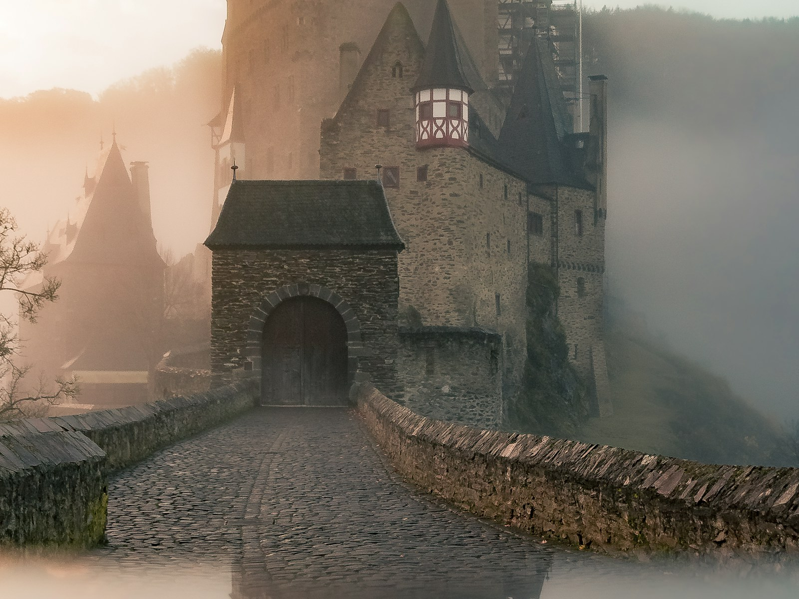
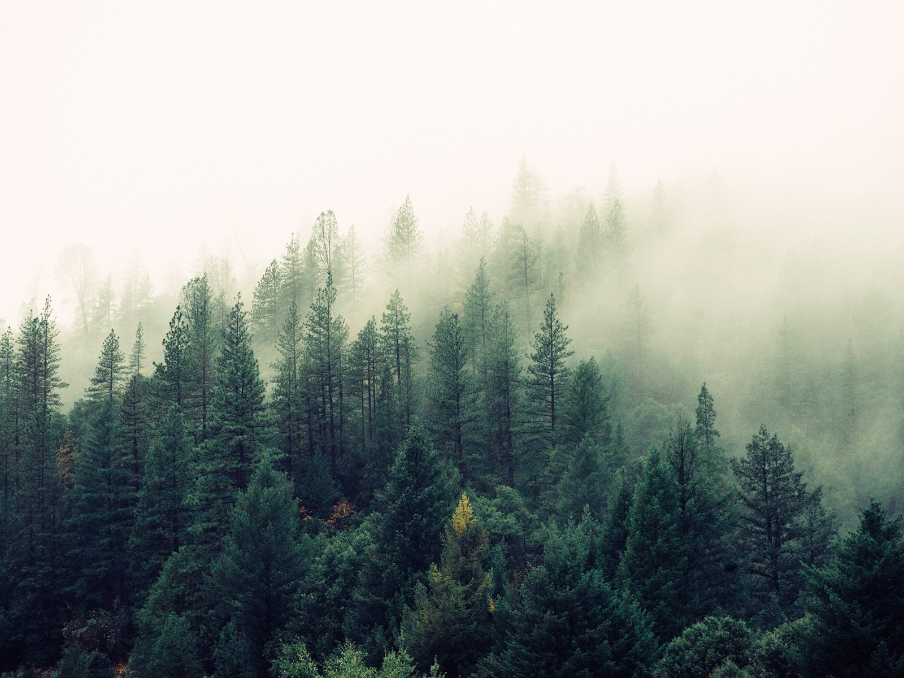
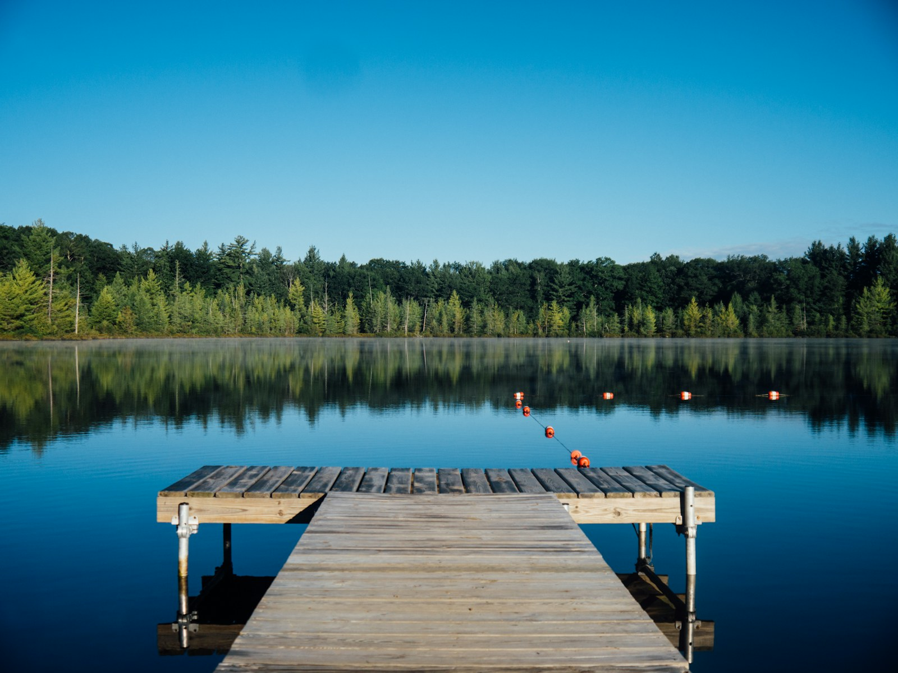

Cassper detecta, mide y recupera oportunidades de venta perdidas en conversaciones con clientes. Este design system define cómo se ve y se comporta la interfaz: paleta oscura, tipografía clara, datos sin decoración de más.
Principios base
01
Claridad
Los datos tienen que leerse de un vistazo. Sin ambigüedad, sin adorno innecesario.
02
Consistencia
Mismos componentes, mismas reglas tipográficas y de color en todo el sistema.
03
Función
Cada elemento de color, espacio o tipo cumple un rol. Si no aporta, se quita.
02 · Sistema de color
Sistema de color.
Fondo oscuro (#07080A). Un solo color de acento funcional: acento. El resto —verde, rojo, ámbar— solo para estados semánticos (éxito, pérdida, alerta). Los glows son opcionales y se usan con criterio, no como estética.
Fondos
Cassper Black
#07080A
Copiado
Surface
#0E1014
Copiado
Card
#14171D
Copiado
Hairline
#1F232C
Copiado
Hairline Soft
#15181F
Copiado
Texto
Text Primary
#E7E9EE
Copiado
Text Secondary
#8A8F99
Copiado
Text Mute
#525762
Copiado
Acentos funcionales — click para copiar hex
Acento principal
#FFFFFF
Copiado
Signal Green
#4ADE80
Copiado
Alert Amber
#FBBF24
Copiado
Loss Red
#F87171
Copiado
Glows — uso en box-shadow y text-shadow
Accent
rgba(255,255,255,0.12)CTAs — box-shadow
Green
rgba(74,222,128,0.10)Stats positivos
Amber
rgba(251,191,36,0.10)Alertas
Red
rgba(248,113,113,0.10)Fuga, pérdida detectada
Presupuesto cromáticoEl acento blanco va en CTAs, énfasis de titular y navegación activa. Verde, ámbar y rojo combinados ocupan 5% o menos del área visible — solo en dots, badges y valores puntuales.
Uso de acentosSolo como color de texto, borde o detalle. Nunca como fondo de sección completa. Glows en box-shadow y text-shadow únicamente.
03 · Tipografía
Tipografía.
Plus Jakarta Sans para titulares y piezas de marca. DM Sans para todo lo demás: body, UI, etiquetas y números. No mezclar: Jakarta no va en datos densos, DM no va en headlines grandes.
Marca · marketing
Plus Jakarta Sans
Headlines de producto y marketing, jerarquía display, italic acento sólo sobre palabras-promesa.
Pesos: 400 · 500 · 600 · 700
Nunca para: párrafos largos, body de artículos, datos tabulados, navegación.
Body · UI · datos
DM Sans
Párrafos, FAQs, helpers, navegación, labels, KPIs y toda cifra con tabular-nums. Misma familia en lectura corrida y en capa técnica; se distingue por tamaño/peso/espaciado.
Nunca para: titular display ni campañas grandes; ahí sólo Jakarta.
Escala completa
Display
Plus Jakarta Sans 600 · 96px lh 0.95 · ls -0.04em
Ver.
Hero único
H1
Plus Jakarta Sans 600 · 72px lh 0.98 · ls -0.035em
La plata se fuga.
Titulares de página
H2
Plus Jakarta Sans 600 · 56px lh 1.02 · ls -0.03em
Cada conversación, medida.
Titulares de sección
H3
Plus Jakarta Sans 600 · 40px lh 1.05 · ls -0.025em
Sin puntos ciegos.
Subtítulos, callouts
H4
Plus Jakarta Sans 600 · 28px lh 1.15 · ls -0.02em
Oportunidades detectadas
Sub-secciones, cards
Body L
DM Sans 400 · 19px lh 1.55
Cassper analiza cada conversación en tiempo real y detecta señales que tu equipo no puede ver.
Párrafos hero
Body M
DM Sans 400 · 16px lh 1.6
El sistema entrega insights accionables en tiempo real.
Cuerpo principal
Body S
DM Sans 400 · 14px lh 1.6
Texto de soporte, tooltips, descripciones secundarias.
Texto de apoyo
Caption
DM Sans 400 · 12px lh 1.5 · ls 0.01em
Metadata · Timestamps · Pie de nota
Metadata, notas
Dato · L
DM Sans 500 · 16px lh 1.5 · ls 0.04em
$2.4M recuperado
Datos importantes, montos
Dato · M
DM Sans 400 · 12px lh 1.5 · ls 0.05em
cassper/intelligence · v2.4.1 · session_id: 8f2a
Labels técnicos, paths
Dato · S
DM Sans 400 · 10px lh 1.5 · ls 0.15em · UPPR
Sistema operando · Análisis en curso · 847 sesiones
Labels nav, uppercase
04 · Espaciado
Espaciado.
Sistema base-4 (4, 8, 12, 16, 24, 32, 48, 64, 96px). La interfaz es densa a propósito: muestra más datos con menos scroll. La jerarquía visual compensa la densidad.
Escala base-4
4px
Gap icono a texto
8px
Padding interno mínimo
12px
Gap compacto, entre label y valor
16px
Gap estándar entre items
24px
Padding de card mínimo, gap entre grupos
32px
Gap entre secciones internas
48px
Padding de card estándar
64px
Separación entre módulos, padding horizontal
96px
Padding de sección mobile
128px
Separación mayor entre bloques temáticos
160px
Padding de sección hero
Reglas de layout
Padding de sección
120px
Vertical en desktop · 80px mobile
Padding de tarjeta
28–36px
Según densidad de contenido
Gap entre componentes
16–24px
16px mínimo · 24px estándar
Max-width contenido
1280px
Padding horizontal 32px
Max-width de párrafos
640–680px
Nunca texto a ancho completo. El límite de línea mejora legibilidad y fuerza el sistema de columnas.
Data badge: fondo acento ~4% · borde ~14% · texto DM Sans 11px — uso esparcido (regla ~5% verde/ámbar/rojo). Acento para la mayoría de etiquetas de intención y navegación. Tag/pill: borde acento 30% · fondo acento 6% · border-radius 999px
Tarjetas
Intención detectada
Upgrade a Pro
Cliente preguntó por funcionalidades avanzadas de reporting.
Alta intención
Conversación en riesgo
Sin respuesta · 47min
Señal de abandono inminente. Intervención requerida.
Urgente
Venta recuperada
$12.400 cerrado
Intervención a tiempo en conversación con Acme Corp.
Concretada
Background: Card #14171D · Borde: Hairline #1F232C · border-radius 6px · padding 28px · Sin box-shadows. La elevación se logra solo con el color de fondo.
06 · Naming
Naming.
Reglas de escritura para el nombre del producto y del motor de IA. Aplican en UI, copy, código y presentaciones.
Nombre de producto
Cassper
Correcto
cassper
minúscula
CASSPER
mayúsculas
CaSSPer
mezcla
Motor de IA
Genia
Correcto
genia
minúscula
GENIA
mayúsculas
En contexto
✓ "Cassper detectó 3 oportunidades perdidas esta semana."
✓ "Potenciado por Genia, el motor de IA de Cassper."
✗ "cassper detectó..." · "la IA de cassper..." · "CASSPER"
07 · Ejemplo aplicado
Ejemplo aplicado.
Vista de referencia de un hero de landing: eyebrow, titular, copy de apoyo y CTAs. Muestra cómo se combinan los elementos del sistema en una pieza real.
Cassper Intelligence · Activo
La plata que pierdes en conversaciones, visible ahora.
Cassper analiza cada conversación con clientes, detecta intenciones de compra y avisa antes de que la oportunidad se pierda.
Eyebrow con live dot · titular Plus Jakarta Sans 56px · acento en la última línea · body DM Sans 16px · CTAs primario + secundario.
08 · Imágenes · Mockups
Fotografía con mockups.
Para piezas de marketing usa fotos de paisaje natural (colinas, niebla, bosques, lagos) como fondo, con un mockup de laptop o móvil encima. Evita playas tropicales, imágenes de galaxias y fotos HDR muy saturadas: generan demasiada competencia visual con el UI oscuro. Fotos en design-system-assets/ambient/.
Cassper
$127K
fuga · 7d
892
activas
$402K
recup.
Mock proporcional al fotograma (slot angosto) · drop-shadow suave separa del fondo.
Cassper
$18.4K
184
2.8K
alpine-lake-calm.jpg · agua y montaña (sin caribeño) · misma lógica vertical · stats en DM Sans.
Cassper
892
activas
$402K
recup.
$18K
fuga
forest-understory-muted.jpg · bosque sin “verdor neón” · laptop más chico (.ds-laptop--xs).
Cassper
247
12m
fog-valley-layers.jpg · profundidad por niebla (misma familia que el hero de colinas) · contraste inferior para el celular.
Cassper
2.847
sesiones
184
24h
34%
bounce
fog-dusk-hills.jpg · atardecer sin neón sobre pastos: tonalidad contenida para no pelear con el acento · laptop anclado abajo.
Cassper
1.284
capturas · día
412
prioridad alta
$9.8K
fuga · hoy
alpine-valley.jpg · profundidad y horizonte bajo niebla · mock chico para respetar la escala.
Cassper
3.104
56
14%
alpine-peaks-twilight.jpg · hora azul sobre roca y nieve.

Cassper
$2.4M
en detección
78
colas activas
4m
resp. típica
plateau-grey-mist.jpg · referencia de paleta contenida frente al verde muy saturado · laptop estándar para hero ancho.

Cassper
2.847
$402K
0
coastal-fog-muted.jpg evita celulares sólo-cielo naranja neón · fondo amortiguado.

Cassper
12.8K
interacciones
Q3
meta trim.
99.2%
disponible
lake-mist-dawn.jpg · misma línea que colinas al atardecer: tierra, niebla, horizonte bajo · laptop compacto para no tapar el espejo de agua.